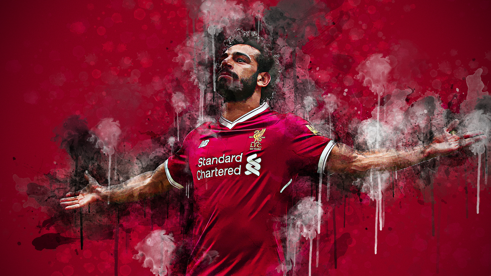
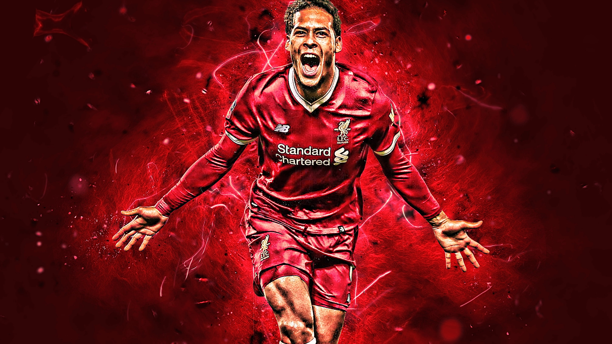

You Will Never Walk Alone

Liverpool FC
Fudbalski klub Liverpool (Liverpool FC) osnovan je 15. marta 1892. godine u Liverpulu, Engleska. Klub svoje domaće utakmice igra na čuvenom stadionu Enfild, koji ima kapacitet od preko 53.000 gledalaca. Liverpool je jedan od najuspešnijih klubova u istoriji engleskog i evropskog fudbala.
Liverpool FC je nastao nakon što je Everton napustio stadion Enfild zbog nesuglasica oko cene zakupa. Osnivač kluba, Džon Holding, želeo je da novi tim nosi ime "Everton Atletik", ali je Fudbalska asocijacija Engleske to odbila, pa je klub dobio ime Liverpool FC. Prvu titulu prvaka Engleske osvojili su 1901. godine, a ubrzo su postali jedan od vodećih timova u zemlji.
Najveći uspesi
- 19 titula prvaka Engleske, uključujući i prvu titulu u Premier ligi 2020. godine.
- 6 titula UEFA Lige šampiona, što ih čini jednim od najuspešnijih evropskih klubova.
- 3 UEFA kupa, 4 UEFA Superkupa, kao i brojne domaće trofeje poput FA kupa i Liga kupa.